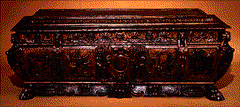
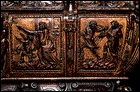
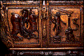

<!--This file created 10/16/97 5:54 PM by Claris Home Page version 2.0-->
<HTML>
<HEAD>
   <TITLE>Mpls Inst Arts - World Mythology: Cassone</TITLE>
   <META NAME="GENERATOR" CONTENT="Claris Home Page 2.0">
   <X-SAS-WINDOW TOP="91" BOTTOM="480" LEFT="60" RIGHT="590">
<HEAD>
</HEAD>
<BODY TEXT="#111111" LINK="#660000" ALINK="#AA0000" VLINK="#444444" BACKGROUND="backgroundbrown.gif">

<P><FONT SIZE="+2">Curriculum Materials: World Mythology</FONT>
<HR>
<TABLE BORDER="3">
   <TR>
      <TD>
         <P><CENTER><A HREF="introduction.html#top">Introduction</A>
         ~ <A HREF="mythbyimage.html#top">Myth by Image</A> ~
         <A HREF="culturelist.html#top">Myth by Culture</A> ~
         <A HREF="myths.html#top">Mythological Comparisons</A> ~
         <A HREF="glossary.html#top">Glossary</A> ~
         <A HREF="suggestedreading.html#top">Suggested Readings</A> ~
         <A HREF="downloadables.html#top">Downloadable Resources</A>
         ~ <A HREF="../tta/classroom_materials_order.html">How to Order</A> ~
         <A HREF="myth_evaluation.html#top">Your Comments Wanted</A>
         ~ <A HREF="#Story">Story</A> ~
         <A HREF="#Background">Background</A> ~
         <A HREF="#Questions">Questions</A></CENTER>
      </TD></TR>
</TABLE>
<HR>
<A NAME="top"></A>&nbsp;<TABLE BORDER="0" CELLSPACING="10" WIDTH="445">
   <TR>
      <TD>
         <P><A HREF="full_jpg/09.jpg"></A><BR>
         
         <B>Image 9</B><BR>
         
         <B><I>Cassone</I></B><BR>
         
         Italy<BR>
         
         About 1600<BR>
         
         Walnut<BR>
         
         25 1/2 x 69 inches<BR>
         
         gift of F. W. Clifford Family 59.8<BR CLEAR="left">
         
         
         <HR>
         <A NAME="Key"></A></P>
         
         <P><CENTER><B>Key Ideas</B></CENTER></P>
         
         <UL>
            <LI>In Greek mythology Phaeton (FAY-a-tun) was the son of
            the sun god, Helios (HEEL-ee-ohs). His failed attempt to
            drive his father's chariot across the sky is a warning to
            those who are too ambitious.
            
            <LI>Italian RENAISSANCE scholars were fascinated with the
            <A HREF="glossary.html#CLASSICAL">CLASSICAL</A> past of
            the ancient Greeks and Romans. They gave Christian
            meanings to classical myths, including the story of
            Phaeton.
            
            <LI>The Italian Renaissance
            <A HREF="glossary.html#STYLE">STYLE</A> is evident in the
            classical <A HREF="glossary.html#MOTIF">MOTIFS</A>
            (moe-TEEFS) and the
            <A HREF="glossary.html#REALISM">REALISM</A> of the carved
            panels on this storage chest, called a <I>cassone</I>
            (cass-OH-nay).
         </UL>
         
         <P>
         <HR>
         <A NAME="Story"></A></P>
         
         <P><CENTER><B>Story</B></CENTER></P>
         
         <P>Phaeton journeyed east to the sun god's grand royal
         palace. Helios welcomed his son and, to prove their bond,
         promised young Phaeton any favor he wished. He did not
         anticipate that the headstrong boy would ask for permission
         to drive his powerful chariot by himself for a day. Bound by
         his promise, Helios had to give in. Just before daybreak
         Phaeton donned his father's solar crown and stepped into the
         shining chariot. Sensing unfamiliar hands on the reins, the
         sun horses thundered off across the sky, veering far off
         their usual course.</P>
         
         <P>Unrestrained, the horses headed through the northern
         constellations. Chaos ensued. Warmed by the sun for the
         first time ever, the small and great bears became restless.
         The usually placid serpent became threatening and the
         plowman ran away, even though he was not used to moving
         quickly, because of the weight of his plow. The startled
         black scorpion prepared to sting Phaeton.</P>
         
         <P>Panicked, Phaeton let go of the reigns and the chariot
         careened haphazardly through the sky. When it fell too close
         to the earth, scorching areas into desert, the earth pleaded
         for help. Zeus (zoose) came to the earth's rescue, hurling a
         mighty lightning bolt, which shattered the chariot into many
         pieces. Phaeton tumbled to his death in a river. Mourning
         for Phaeton, his sisters turned into poplar trees, from
         which their tears flowed and hardened into drops of amber.
         </P>
         
         <P></UL>
         <HR>
         <A NAME="Background"></A></P>
         
         <P><CENTER><B>Background</B></CENTER></P>
         
         <P><B>Phaeton</B><BR>
         
         The Greek story of Phaeton was probably based on older tales
         that explained eclipses or speculated about the disasters
         that would result if the sun ever veered from its regular
         path across the sky. Despite many possible interpretations
         of Phaeton's story, it is most obviously a metaphor for the
         limitless desires, but finite powers, of human beings. The
         story was fabulously elaborated upon by the Roman poet Ovid
         (AH-vid) in his collection of stories called
         <I>Metamorphoses</I>. During the Renaissance the story took
         on an entirely new significance.</P>
         
         <P><B>The Italian Renaissance</B><BR>
         
         During the 14th and 15th centuries, many Italian cities
         became important European centers of industry and trade.
         Living conditions improved and people became more interested
         in their earthly existence than with life after death, a
         significant reversal of the attitudes of their medieval
         predecessors. The term Renaissance, meaning "rebirth,"
         derives from this renewed interest in life on earth and a
         new confidence in humankind's potential for achievement. A
         revival of the art and literature of the ancient Greeks and
         Romans, which began in the 13th century, contributed to the
         humanism of Renaissance Italy and greatly influenced its
         art. Renaissance art became increasing
         <A HREF="glossary.html#NATURALISTIC">NATURALISTIC</A> as
         artists studied their own world and classical art.</P>
         
         <P>In order to reconcile the classical past with Christian
         beliefs, Renaissance scholars looked for Christian morals in
         classical myths whose original meanings were no longer
         understood. For example, Phaeton's unsuccessful efforts were
         equated with Lucifer's attempts to get too close to god.
         Moralizers drew connections between Phaeton's demise and the
         Old Testament text of Isaiah 14:12 - "How art thou fallen
         from heaven, O Lucifer, son of the morning." Scenes of
         Phaeton falling from his chariot were thus very popular in
         Renaissance art.</P>
         
         <P><B>Cassone</B><BR>
         
         This type of chest is usually referred to by its Italian
         name, <I>cassone</I>. Cassoni (cass-OH-nee) were most often
         used as marriage chests to hold brides' household linens.
         Especially popular from the 14th to the 16th century,
         cassoni usually featured scenes from the classical mythology
         so popular at this time. This cassone exemplifies the
         Italian Renaissance style of art, particularly in its
         attention to the human body, the illusion of realistic
         spaces achieved through
         <A HREF="glossary.html#PERSPECTIVE">PERSPECTIVE</A>
         techniques, and its adaptation of classical motifs.</P>
         
         <P>This cassone tells the story of Phaeton in four
         carved panels. The first vignette shows young Phaeton
         cavorting with the child who taunted him. Typical of
         Renaissance figures, their bodies are turned and their knees
         are bent to convey a sense of movement. Their windblown
         drapery enhances the sense of action. Their pseudo-Greek
         garb and tightly curled hair evoke ancient Greek sculpture.
         The artist achieved a believable sense of depth by carving
         the frontmost figure in deeper
         <A HREF="glossary.html#RELIEF">RELIEF</A>.<BR>
         
         <BR CLEAR="left">
         
         In the second panel, Phaeton's mother points in the
         direction of the sun, represented as a stern human face with
         rays. Phaeton eagerly reaches out toward his father. His
         partially nude body is babylike, reminiscent of Greek
         carvings of Cupid. Again, action is achieved with billowing
         drapery. The artist creates the illusion of space by carving
         the doorway behind the figures in low relief and by making
         the distant sun very small.</P>
         
         <P>The third scene shows Phaeton on his knees before
         his mighty father, who is here represented as a man standing
         on a decorated platform. The marvelous palace of Helios
         recalls classical architecture.</P>
         
         <P>The cassone's final panel shows the image of Phaeton most
         familiar during the Renaissance. Phaeton, now represented
         fully nude and adult, tumbles from the chariot alongside two
         falling horses. The anatomy of Phaeton and the horses is
         remarkably well rendered.<BR>
         
         <BR CLEAR="right">
         
         Many adaptations of classical motifs decorate this elaborate
         cassone. On the corners are harpies - monsters with the
         heads and breasts of women and the wings and claws of birds
         - which were said to torment misers. Harpies symbolized the
         deadly sin of greed (avarice) in many Renaissance moral
         allegories. The five heads punctuating the horizontal band
         above the main scenes and the single large face at the
         center bottom of the chest are variations on satyr and
         gorgon masks that often decorated classical architecture.
         One face conceals the key hole in its mouth. Around these
         faces are anthemia, conventional floral motifs based on the
         honeysuckle or palmette. The leaves in the narrow band
         around the lid of the cassone are acanthus, another popular
         classical decoration.</P>
         
         <P>
         <HR>
         <A NAME="Questions"></A></P>
         
         <P><CENTER><B>Discussion Questions</B></CENTER></P>
         
         <P><B>Look</B><BR>
         
         <B>1.</B> <B>Tell the story of Phaeton.</B> <B>Show image 9
         and explain that the cassone tells the story of Phaeton in
         the four carved panels.</B> <B>Show image 9a and ask:</B>
         What part of the story do you see carved in the first panel
         (left)? <B> (Phaeton is taunted by his playmate.) What part
         of the story do you see on the second panel (right)?
         (Phaeton and his mother gesture toward the sun.)</B> <B>Show
         image 9b and ask:</B> What part of the story do you see
         carved in the third panel (left)? <B>(Phaeton kneels before
         his father, Helios.)</B> What part of the story do you see
         on the fourth panel (right)? <B>(Phaeton tumbles from the
         chariot alongside two falling horses.)</B></P>
         
         <P><B>2.</B> The people of the Italian
         <A HREF="glossary.html#RENAISSANCE">RENAISSANCE</A> were
         fascinated with ancient Greek and Roman cultures. What clues
         does the artist give us that the story has Greek origins?
         <B>(Clothing and tightly curled hair evoke ancient Greek
         sculpture, and there is Greek architecture in the panel
         background.)</B> Can you see anything else that reminds you
         of ancient Greece on this cassone? <B>(Answers might
         include: Figures on the corners of the chest are Greek
         monsters said to torment misers. Heads above the pictorial
         panels and face at the center bottom of the chest often
         decorated classical architecture.)</B></P>
         
         <P><B>3.</B> Where do you see straight lines in these
         panels? <B>(Architectural structures in the
         <A HREF="glossary.html#BACKGROUND">BACKGROUND</A> of the
         panels.)</B> Where do you see curved lines? <B>(Figures,
         clothing, horses, and chariot.)</B> What effect do all the
         curved lines in the figures and their clothing have?
         <B>(Give the figures a sense of movement and action.)</B>
         </P>
         
         <P><B>4.</B> Italian
         <A HREF="glossary.html#RENAISSANCE">RENAISSANCE</A> artists
         were very interested in creating the illusion of depth in
         their work. The artist who carved this cassone used
         <A HREF="glossary.html#OVERLAPPING">OVERLAPPING</A>,
         <A HREF="glossary.html#SCALE">SCALE</A> (the scale of
         objects far away in a space appear smaller than objects in
         the foreground), and <A HREF="glossary.html#HORIZON">HORIZON
         LINES</A> to create a sense of deep space. <B>Show image
         9a.</B> What appears farthest from you? Closest to you?
         Where has the artist used overlapping? <B>(The figures in
         the right panel overlap the doorway.) Where has the artist
         used scale to show distance? (The very small sun in the
         right panel.)</B> <B>Show image 9b.</B> What appears
         farthest from you? Closest to you? Where has the artist used
         overlapping? <B>(The figures in the left panel overlap the
         building. The figure of Phaeton in the right panel overlaps
         the carriage and the horses.)</B> Where has the artist used
         a horizon line? <B>(The panel on the left.)</B></P>
         
         <P>
         <HR>
         <B>Think</B><BR>
         
         <B>1.</B> The artist who carved this cassone chose to
         represent the story of Phaeton in four scenes from the
         story. Working in groups of four, think of a story that
         everyone in your group knows well. What four scenes from the
         story would you choose to represent? Why? <B>Extension:
         Illustrate the four scenes, each on a separate piece of
         paper. Trade your illustrations with another group. Now put
         the new set of illustrations in their proper sequence.</B>
         How did you know which came first? Which came last?</P>
         
         <P><B>2.</B> The story of Phaeton is a story about a boy who
         "bit off more than he could chew"! What does that mean?
         <B>(Taking on more than you're equipped to handle.)</B> Have
         you ever bitten off more than you could chew? What happened?
         How was the problem resolved?</P>
         
         <P><B>3.</B> Cassoni were most often used as marriage chests
         to hold brides' household linens. What is the moral of the
         story of Phaeton? <B>(Too much ambition is unhealthy!)</B>
         Why might this story be appropriate for a marriage chest?
         <B>(Unrestrained ambition may have disastrous effects on a
         marriage.)</B><FONT SIZE="+2">
         <HR>
         </FONT>
      </TD></TR>
</TABLE> <TABLE BORDER="3">
   <TR>
      <TD>
         <P><CENTER><A HREF="introduction.html#top">Introduction</A>
         ~ <A HREF="mythbyimage.html#top">Myth by Image</A> ~
         <A HREF="culturelist.html#top">Myth by Culture</A> ~
         <A HREF="myths.html#top">Mythological Comparisons</A> ~
         <A HREF="glossary.html#top">Glossary</A> ~
         <A HREF="suggestedreading.html#top">Suggested Readings</A> ~
         <A HREF="downloadables.html#top">Downloadable Resources</A>
         ~ <A HREF="../tta/classroom_materials_order.html">How to Order</A> ~
         <A HREF="myth_evaluation.html#top">Your Comments Wanted</A>
         ~ <A HREF="#Story">Story</A> ~
         <A HREF="#Background">Background</A> ~
         <A HREF="#Questions">Questions</A></CENTER>
      </TD></TR>
</TABLE></P>
</BODY>
</HTML>
